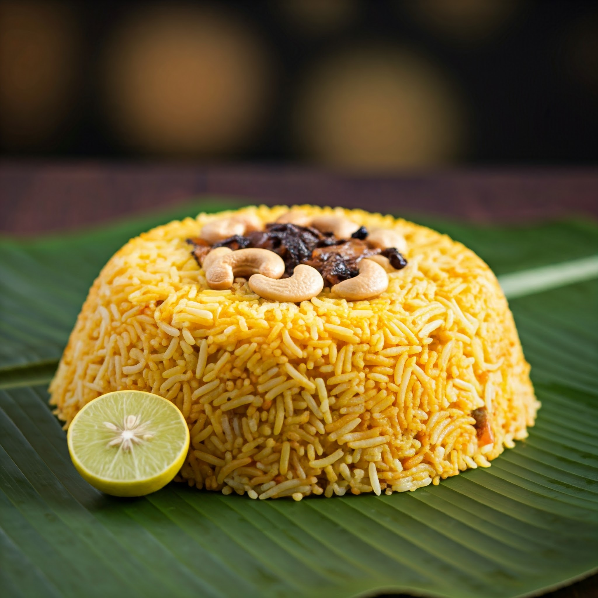

Thalassery biryani
Price: 310/-
Description: Thalassery biryani is a delicious and unique dish from the coastal town of Thalassery in Kerala, known for its rich flavors and distinct preparation. Made with fragrant kaima or jeerakasala rice, it features tender chicken or mutton cooked with aromatic spices, caramelized onions, yogurt, and fresh herbs like mint and coriander. Unlike other biryanis, it avoids tomatoes and artificial colors, relying on natural ingredients for its vibrant look and flavor. Prepared using the traditional dum method, where layers of rice and meat are slow-cooked together, it is typically served with sides like date pickle, raita, and coconut chutney, offering a perfect balance of taste and aroma
Order Now